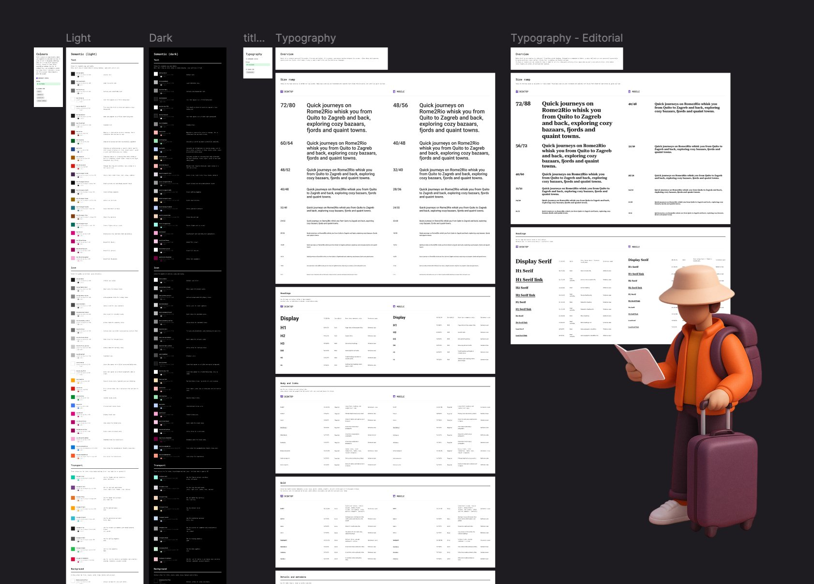

Rome2Rio · 2025
Hitch 2.0 is the second version of Rome2Rio's design system, not the first. I expanded the core component library, added more atoms and icons, cleaned up the token architecture, and streamlined adoption across two dev stacks that the product had accumulated. Parts of this work were done with AI assistance, helping speed up token auditing and component documentation.
My role
Design system lead. sole designer
Team
Engineering, product, brand
Output
Full token system + component library
When I joined Rome2Rio, the product had two separate dev stacks that had grown apart over time. Hitch 1.0 existed but had gaps: limited component coverage, inconsistent token usage, and no clear adoption path for engineers working across the two stacks. Hitch 2.0 was about fixing that.
The goal was to expand what existed, clean it up properly, and make it genuinely usable by both design and engineering, with a clear path to consolidate the stacks over time. AI tooling (Claude and Codex) helped speed up the more repetitive parts: token auditing, naming convention passes, and draft documentation.
color.action.primary) rather than primitive references (e.g. pink.500) meant design intent was captured in the token itself. making theming and future changes systematic rather than manual.

"A design system is only as good as its adoption. The goal wasn't a beautiful Figma file. it was a shared way of working."
The value of a design system is compounding. Every component built to spec is a decision that doesn't need to be made again. Every token applied consistently is a change that can be made globally in one place. Every documented pattern is a conversation that doesn't need to happen in a design review.
At Rome2Rio, Hitch changed the speed and quality of both design and engineering output. New features could be designed faster because the building blocks existed. Engineering could ship with confidence because the spec was unambiguous.